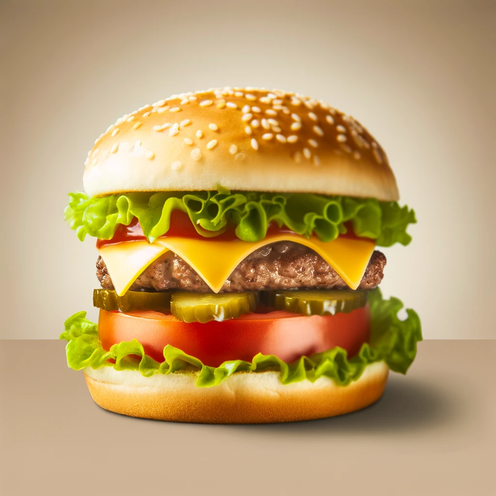
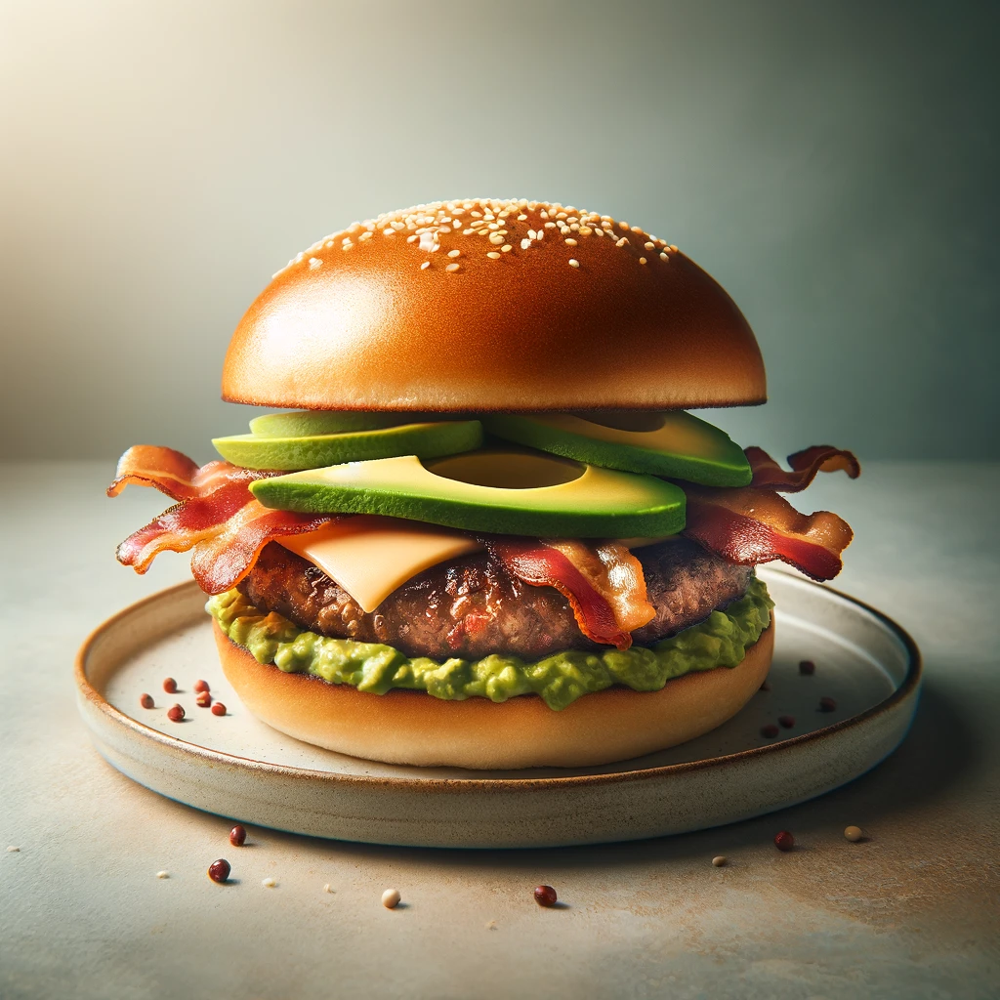
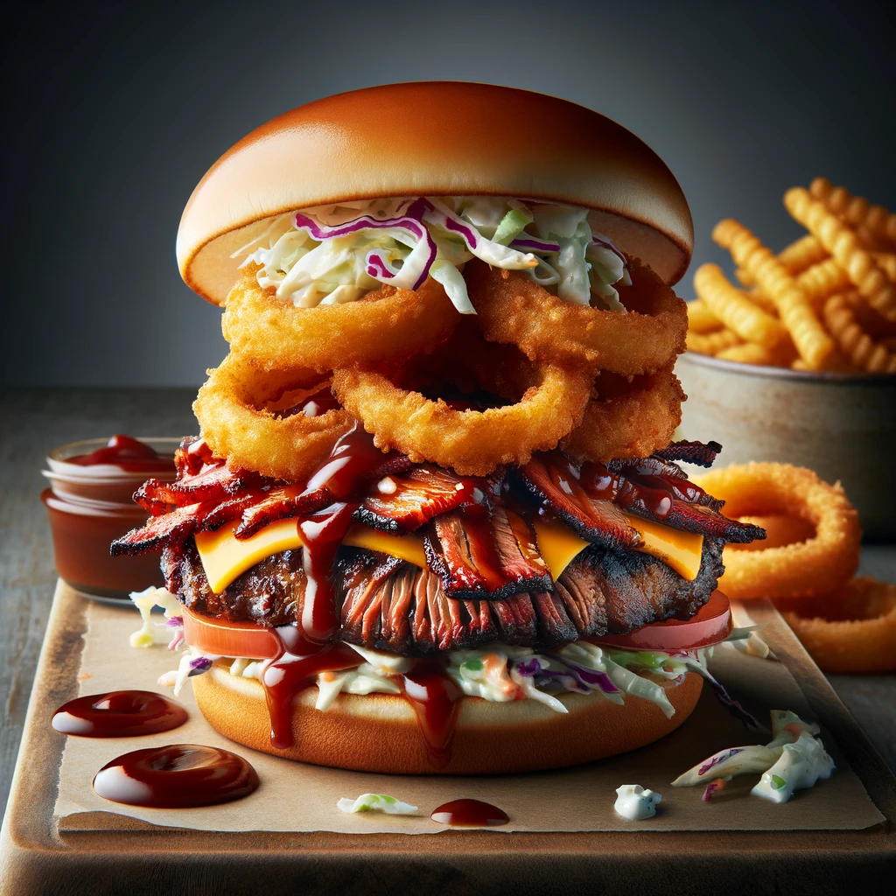
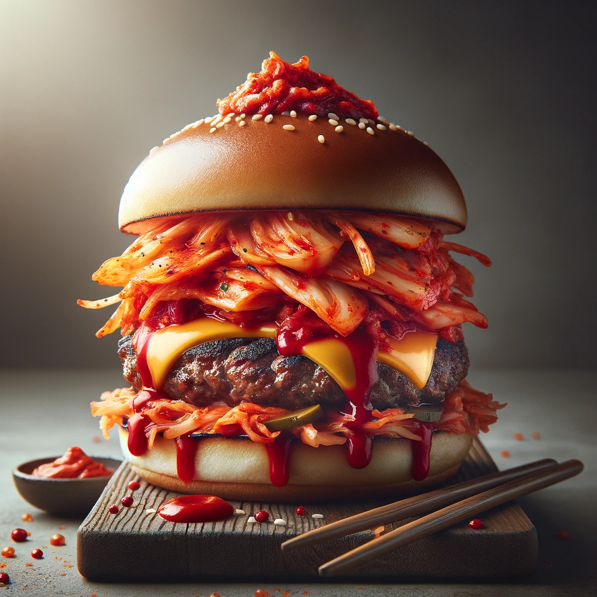
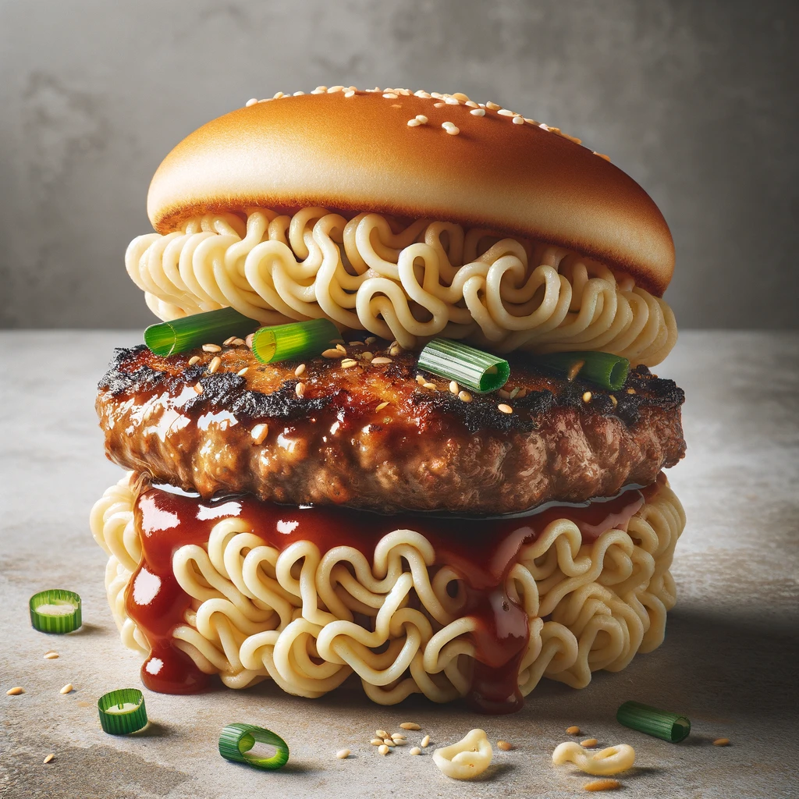
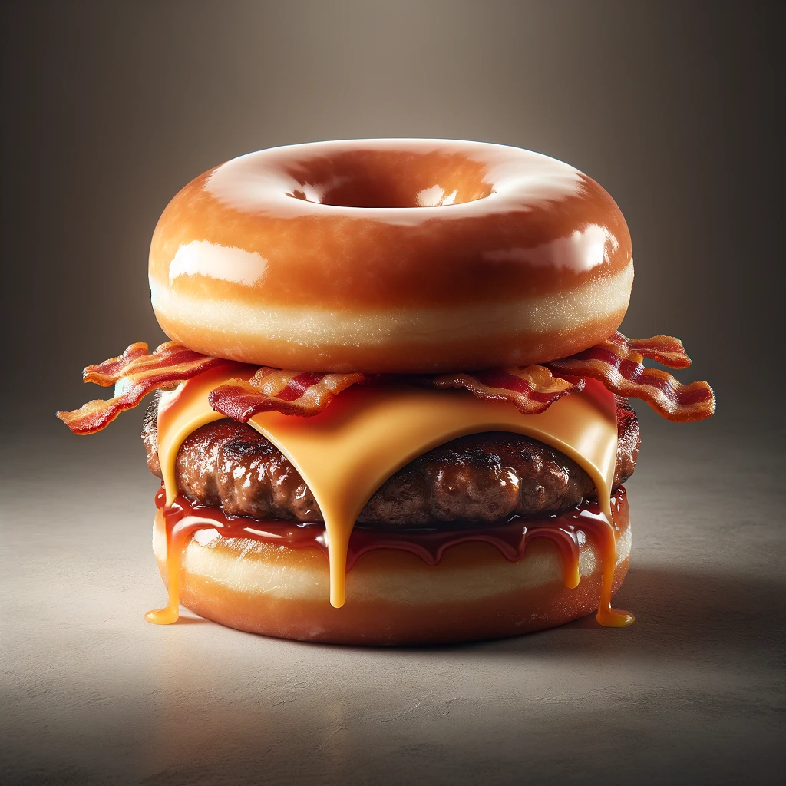
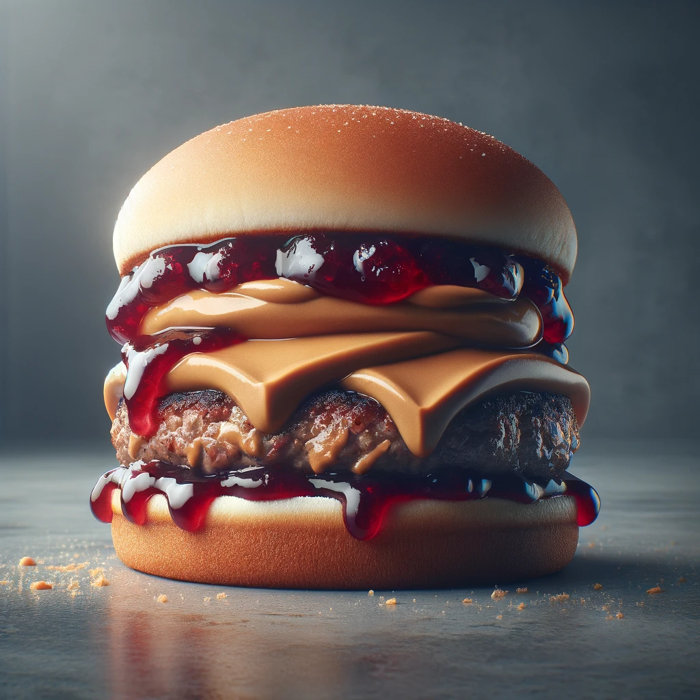
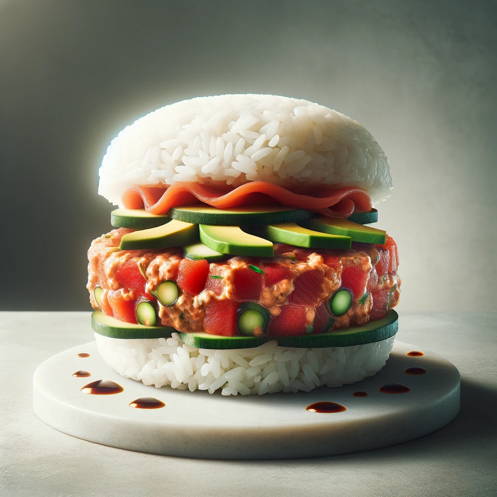
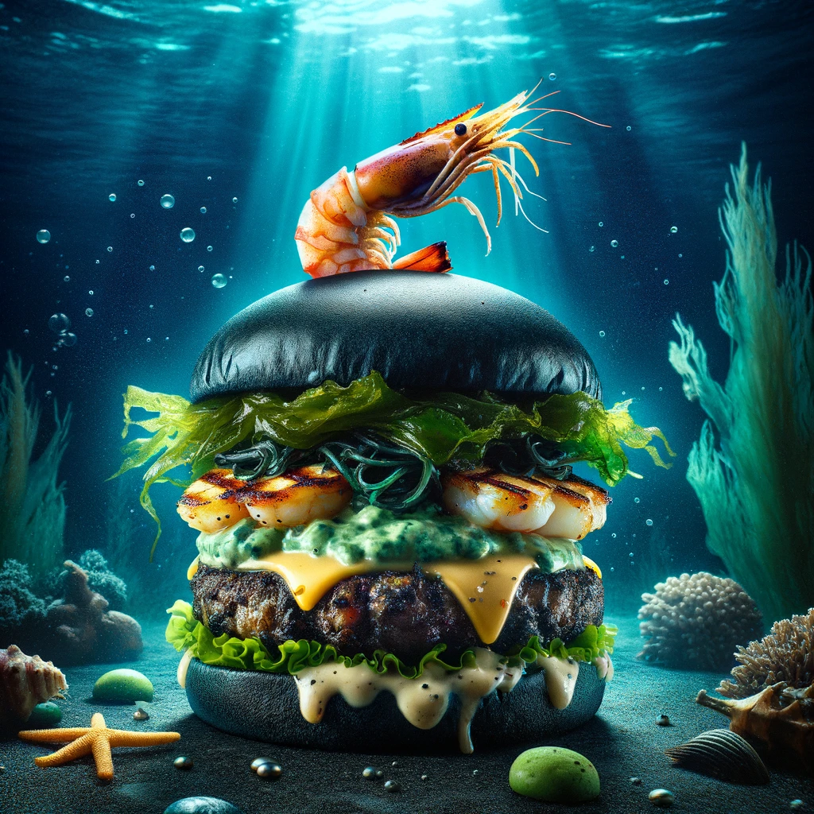
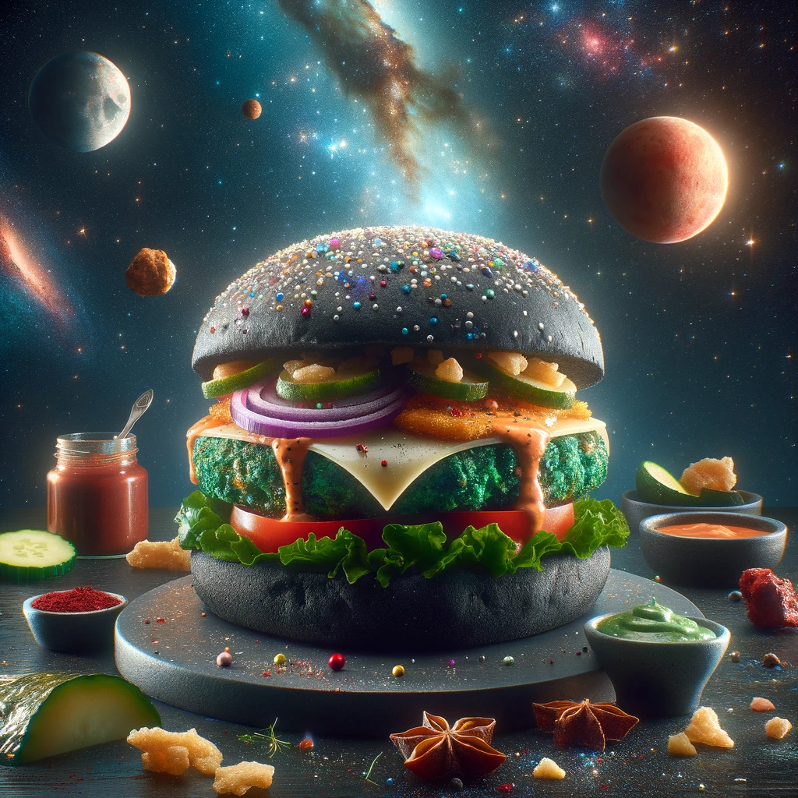

I love burgers! There is nothing in the world quite like it. I hope you enjoy my top 10 list.
Top 10 Burgers
10. The Classic Cheeseburger
Indulge in the timeless classic that is The Classic Cheeseburger, a masterpiece of culinary simplicity and taste. Crafted with the finest ingredients, this burger features a juicy, perfectly seasoned beef patty, lovingly draped in a layer of melted, velvety cheese that oozes with every bite. Nestled between the soft, sesame-speckled buns are crisp lettuce, ripe tomato slices, and crunchy pickles, adding a fresh crunch and vibrant flavors to every mouthful.

9. Bacon Avocado Burger
Elevate your burger experience with the Bacon Avocado Burger, a gourmet twist on the classic. This burger features a juicy, perfectly cooked beef patty, topped with crispy, golden bacon and fresh, creamy avocado slices for a symphony of textures and flavors. Melted cheese envelops the patty, adding a rich, indulgent layer. Served on a soft, toasted bun, this burger is not just a meal; it's a culinary adventure. Ideal for those who appreciate the finer details in their dining experiences, it's a true testament to flavor and craftsmanship.

8. BBQ Brisket Burger
The BBQ Brisket Burger, designed to encapsulate the essence of a Southern twist on a classic. This burger marries the hearty flavors of a beef patty with the deep, smoky notes of slow-cooked barbecue brisket. Topped with a tangy coleslaw and encased by golden, crispy onion rings, each layer adds a texture and flavor that complements the next. The burger is lavishly smothered in a rich barbecue sauce, adding a glossy finish that promises a burst of flavor in every bite. Set against a modern, neutral background with subtle red highlights, this image captures the burger's appeal in a clean and professional manner, perfect for showcasing its gourmet qualities.

7. Kimchi Burger
Introducing the Kimchi Burger - a culinary masterpiece that brings a Korean twist to the classic American favorite. This burger is a harmonious blend of bold and zesty flavors, featuring a juicy beef patty topped with spicy and tangy kimchi, creating a symphony of taste with every bite. The gochujang mayo adds an extra layer of complexity, with its unique spicy and slightly sweet notes that tantalize the palate. Perfectly assembled, this burger is not just a meal; it's an experience that transports you to the streets of Seoul, offering a taste of Korean cuisine in a familiar form. Whether you're a fan of bold flavors or looking to explore new culinary horizons, the Kimchi Burger is sure to impress and satisfy.

6. Ramen Burger
The Ramen Burger burger blends Eastern and Western culinary traditions, featuring a unique twist where the classic bun is substituted with crispy, golden fried ramen noodles. At its heart lies a succulent, teriyaki-glazed beef patty, delicately seasoned to perfection. The burger is artfully topped with a sprinkle of fresh scallions and a dash of sesame seeds, adding a burst of flavor and texture. This Ramen Burger is more than just a meal; it's a culinary adventure that tantalizes the taste buds with its harmonious fusion of flavors and textures.

5. Donut Burger
Indulge in the ultimate sweet and savory experience with the Donut Burger. This innovative creation redefines the boundaries of burger craftsmanship by replacing the traditional bun with a soft, glazed donut, adding an irresistible sweet contrast to the savory flavors within. At its heart, a perfectly cooked beef patty, complemented by the melting embrace of American cheese and the crunch of crispy bacon, offers a rich and satisfying taste sensation. Designed for those who dare to explore the culinary unconventional, this burger promises an unforgettable blend of textures and flavors.

4. Peanut Butter and Jelly Burger
Dive into the unconventional with the Peanut Butter and Jelly Burger, a daring fusion that tantalizes the taste buds with its bold flavors. At the heart of this culinary curiosity lies a succulent beef patty, enveloped in the creamy embrace of peanut butter and adorned with a glistening layer of grape jelly. This burger challenges conventions, blending the savory essence of beef with the sweet and nutty undertones of a classic childhood duo. Crafted for the adventurous eater, it's a delectable paradox that marries the familiar with the unexpected, offering an intriguing twist on the traditional burger experience.

3. Sushi Burger
The Sushi Burger is a unique culinary creation blends the artistry of Japanese cuisine with the classic appeal of a burger. At the heart of this innovative dish lies a spicy tuna tartare patty, enveloped between two perfectly shaped sushi rice buns. Topped with thinly sliced avocado and crisp cucumber, the burger is further enhanced with a light drizzle of spicy mayo and soy sauce, adding depth and a kick of flavor. This Sushi Burger not only promises a delightful taste experience but also a feast for the eyes, with its vibrant colors and fresh ingredients presented in a sophisticated and appetizing manner.

2. The Sea Monster Burger
Embark on a culinary voyage with The Sea Monster Burger, a creation that plunges your taste buds into the heart of the ocean. This burger features a unique bun infused with squid ink, casting a dark, mysterious hue reminiscent of the deep sea. The core of the burger is a rich blend of seafood, offering a patty that's both flavorful and a nod to the ocean's bounty. Adorned with a fresh seaweed salad, the burger introduces a crunchy, marine freshness to each bite. A grilled prawn sits atop, symbolizing the sea's treasures, while a tangy wasabi-lime mayo adds a zesty, invigorating finish. This burger isn't just a meal; it's an underwater adventure on a plate, offering a taste of the sea's depth and diversity.

1. The Outer Space Burger
The Outer Space Burger is a culinary journey to the stars, blending otherworldly flavors and ingredients for a taste that's out of this world. Nestled within a glitter-dusted charcoal bun that mimics the night sky, the burger features an 'alien' green spinach and tofu patty at its core, offering a vibrant and healthy twist. Topped with a slice of 'moon cheese,' known for its vibrant hue and peppery flavor, along with 'red planet' tomato confit and 'asteroid' onion crisps, each bite is an exploration of taste and texture. Served with a side of 'nebula sauce,' a shimmering, spicy galaxy glaze, this burger doesn't just satiate your hunger—it transports you to the cosmos, making every meal an interstellar adventure.
